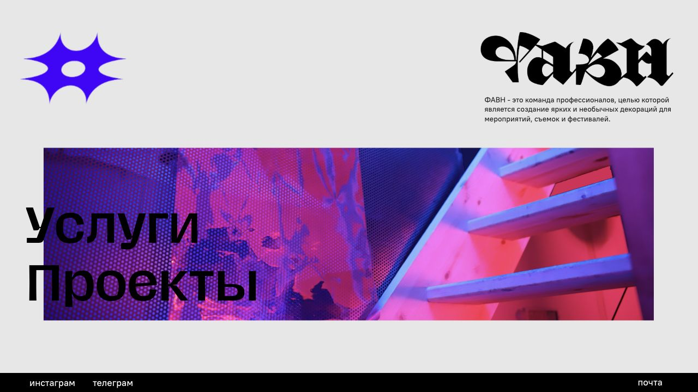
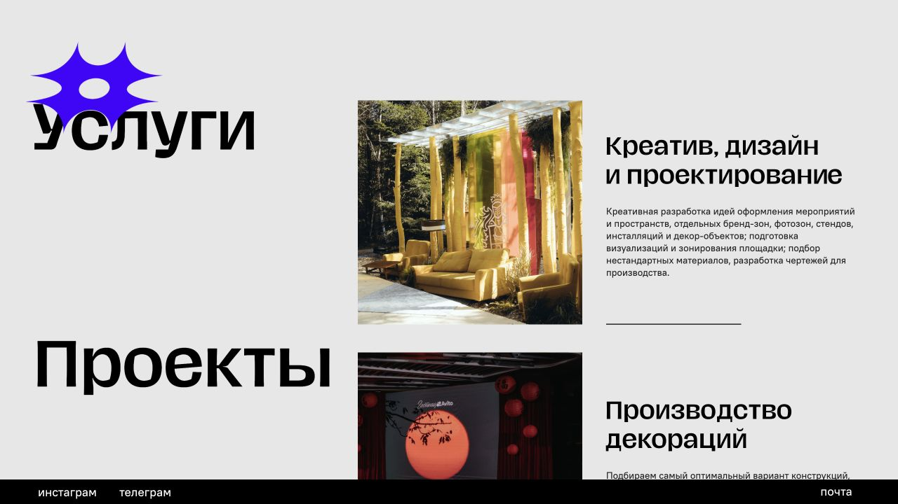
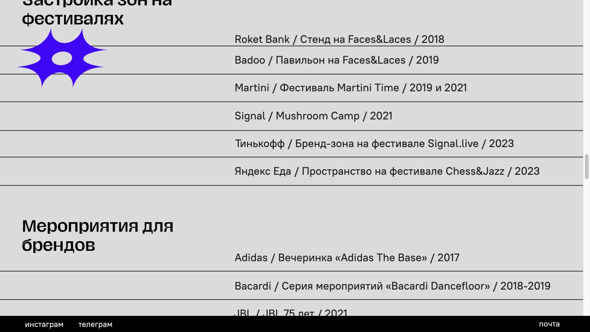
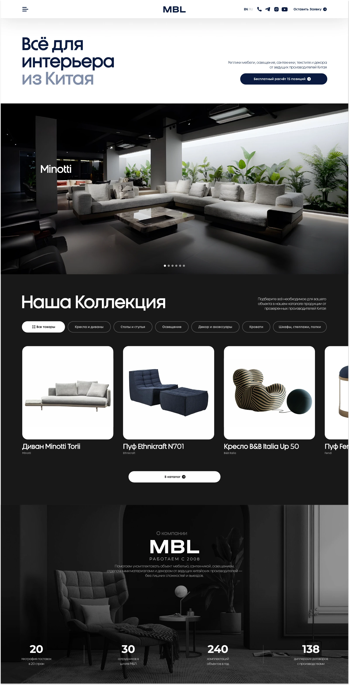
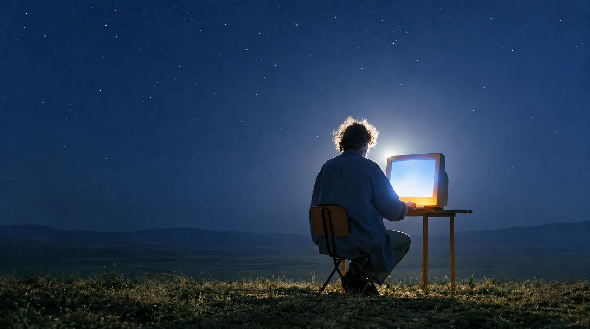
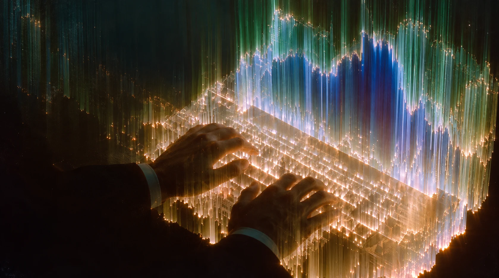

Собираем всё
в одну сильную
витрину.
Структура, тексты, дизайн, адаптив и запуск — в одном понятном процессе.
Структура, тексты, дизайн, адаптив и запуск — в одном понятном процессе.
Помогаем быстро понять ваш продукт, увидеть его ценность и сделать следующий шаг.



Портфолио, которое хочется рассматривать.
Вёрстка более 50 страниц, адаптивы и последующие доработки. Часть исходного дизайна создана командой проекта.

От выбора мебели до заявки на тур.
Дизайн и разработка интернет-магазина: многоуровневый каталог, навигация и заявочные сценарии для онлайн- и офлайн-туров по фабрикам Китая.
продаж через сайт
Сайт, контент и сообщество.
Создали и развивали сайт, связав его с YouTube и Telegram. За указанный период через сайт оформлено 4 433 заказа; аудитория сообщества — 4 000 человек. Данные из материалов TVIM.
50 000 пользователей на пике
Лендинг, из которого вырос продукт.
После лендинга спроектировали Telegram Mini App: продуктовую логику, пользовательские сценарии и систему экранов. Аудитория на пике — до 50 000 человек, по материалам TVIM.
Тяжёлый контент. Лёгкая загрузка.
Базовая структура, визуальное направление, мультиязычность и выдача изображений и видео через CDN. Последующие изменения — команда клиента.
Разбираемся в вашем продукте, находим визуальную идею и доводим её до работающего сайта.
На связи — Даня Мальцев, основатель и арт-директор TVIM. Дизайн, тексты и разработка складываются в один процесс.
Структура, тексты, индивидуальный дизайн, адаптив и запуск. Спринт за 7 дней — при согласованном объёме, готовом продукте и одном человеке, принимающем решения.
Обсудить лендингАудит подачи, визуальное направление, айдентика, дизайн-система и ключевые страницы. Состав работ определяем после знакомства с задачей.
Обсудить обновлениеМногостраничные сайты, каталоги, Telegram Mini Apps, боты и интеграции. Оцениваем стоимость и сроки после разбора сценариев.
Обсудить продуктНа каждом этапе понятно, что делаем, зачем и что будет дальше.

Разбираем продукт, аудиторию и задачу. Находим то, что делает вас собой.
На выходе: направление и планСобираем структуру и тексты. Выстраиваем путь от первого интереса до обращения.
На выходе: прототипТипографика, цвет, графика и движение. Всё работает на одну идею.
На выходе: дизайн и адаптивы
Разрабатываем, подключаем сервисы, проверяем на разных экранах и запускаем.
На выходе: работающий сайтЕСТЬ ИДЕЯ?
ДавайтеРасскажите, что хотите запустить.
Обсудим задачу, сроки и бюджет.